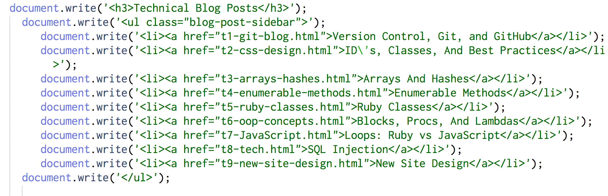
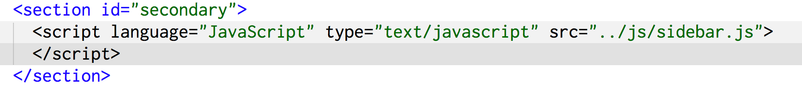

Making Life Easier With JavaScript
November 16th, 2014
I recently redesigned my entire website to give it a cleaner and more professional look. You may notice that I like to keep a link to each one of my blog posts in a sidebar to the right of my blog posts (or at the bottom of the posts if you are reading this on a smaller screen device.) Up until today, I used to have to go into each one of my html files and manually change the sidebar every time I added a new blog post, but thanks to JavaScript, I will never have to do that again.
I am still new to JavaScript, but I have learned enough about how JavaScript works to know that there must be a better way for me to update this sidebar after each post. After a few Google searches I was able to find the method that I was looking for. Introducing:
document.write()
This method does exactly what you would expect it to do. It writes HTML expressions or JavaScript code to the document. Now all I have to do is store my code for my sidebar in its own separate JavaScript file. Every time I add a new post, I only have to update this one file. Here is what my sidebar.js file looks like:
{kind=link}
I pretty much just copied and pasted my existing HTML code, wrapped each line in a document.write() method, and put it in quotation marks for JavaScript. Next, I went back and updated each of my pages and replaced my old HTML code for the sidebar with a script that executes my sidebar.js file:
{kind=link}
I updated my blog-template so that each time I create a new post this script is automatically inserted where the old HTML use to go. Now every time I add a blog post to my page, I only have to update the sidebar.js file once, and all of my pages will be updated at the same time. This is going to make my life a million times easier. Thank you JavaScript!
And thank you for reading.